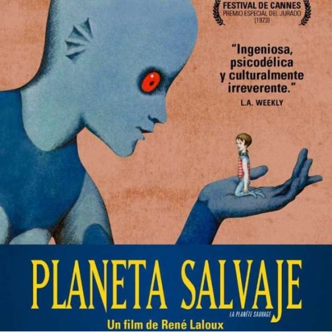

Conocé la agenda cultural del finde en Buenos Aires
Marina Fages, The Colorated, El planeta salvaje, Melanie Williams y más. Te recomendamos una serie de eventos a tener en cuenta cuando empieces a planear tus actividades recreativas. +Info